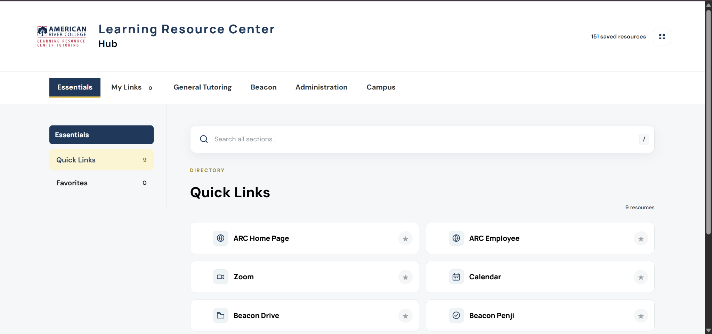

01
LRC Hub
Centralizing 150+ staff resources into one organized, searchable workspace.
I designed and developed the hub after noticing that frequently used workplace resources were primarily managed through individual browser bookmarks. The result is a centralized interface with categories, search, favorites, and personal links.
